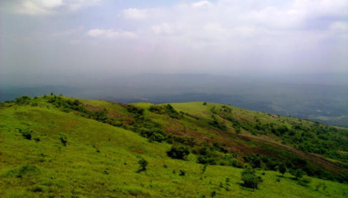

Kerala is known for its pleasant climate, heavy rainfall, pollution free-environment and one of the best tourist attractions across the world. Being the famous hilltop district of Kerala, Malappuram showcases wide options of places to the tourists with its fantabulous buildings, parks, temples, waterfalls and much more. Relish your journey in the district of God’s own country! Check out the top places to visit in Malappuram and take a Malappuram tourist places map and begin your journey.
Top Places To Visit In Malappuram
Kodikuthimala: Highest Point Of Amminikkadan Hills
With its chilled climate and similarities to the town of ooty, kodikuthimala is one of the top spot tourist attractions of Malappuram. This is one of the most beautiful places in Malappuram. The place is roosted on a height of 522m above sea level and the highest point of Amminikkadan hills. It is the spot where ones the Britishers hoisted there flags during the colonial period. Location: Malappuram district Timing: NA Entry Fee: INR 5
Shanthitheeram: Perfect Picnic Spot

What about visiting a tourist place with 0 entry fees? Shanthitheeram, one of the famous places to visit in Malappuran and to hangout with your dear ones. This is one of the most beautiful places in Malappuram. The park has a number of activities to offer and one of them is boating where the locals and tourists never drops the idea to go for it. You can also take up off road ATV and discover many more services in Shanthitheeram. Location: Varanam Post Office Alappuzha 688555 Kerala, 688555 Timing: NA Entry Fee: INR 5 per person
Bharathapuzha River: Second Longest River In Kerala

Also known as River Nilsa that provides shelter to 11 reservoirs with Malampuzha dam, it is the second longest river in Kerala. The river has been an integral part of the Malabar district and a sacred river for Hindus as there are mentions of the river in the ancient scriptures. This is one of the few rivers in Kerala with a spiritual and cultural significance for people, especially the famous cultural house of the state Kalamandalam is situated on the banks of the river. Location: Malabar district Timing: NA Entry Fee: No entry fee